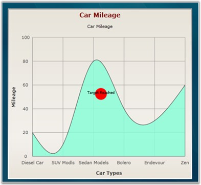

Predefined shapes for annotation objects are used to point at specific information about a position in the chart. For example: Circle, Arrow etc.
The following table describes more about the annotation shapes:
Table 177: Property Table
|
Name of the Property |
Type of Property |
Values It accepts |
|
Content |
Dependency Property |
String |
|
AnnotationShape |
Dependency Property |
Enum of type AnnotationShapes |
|
Fill |
Dependency Property |
Colors from brushes |
|
Offset X |
Dependency Property |
Double value |
|
Offset Y |
Dependency Property |
Double Value |
 Note:
Note:
· The Content property helps represent the required content in an annotation shape.
· The AnnotationShape property helps create the required shape for an annotation object and the Fill property helps fill the selected shape with required color.
The following code snippet illustrates the creation of predefined annotation shape for a Chart.
|
[XAML]
<syncfusion:Chart.AnnotationsLabel> <syncfusion:ChartAnnotationLabelsCollection> <syncfusion:ChartAnnotationLabel x:Name="Annotlabel" Content="Target Reached" OffsetY="200" OffsetX="200" AnnotationShape="Circle" Fill="Red"/> </syncfusion:ChartAnnotationLabelsCollection> </syncfusion:Chart.AnnotationsLabel> <syncfusion:ChartArea > |
|
[C#]
Chart1.AnnotationsLabel[0].OffsetX = 200; Chart1.AnnotationsLabel[0].OffsetY = 200; Chart1.AnnotationsLabel[0].Content = "TargetReached"; Chart1.AnnotationsLabel[0].AnnotationShape = AnnotationShapes.Circle; Chart1.AnnotationsLabel[0].AnnotationShape = Red; |
Run the code. The following output is displayed.

Figure 264: Annotation Shape-Circle
A sample which demonstrates the various predefined annotation shapes in Essential Chart, is available in the following install location:
C:\Documents and Settings\<user name>\My Documents\Syncfusion\Essential Studio\ Samples\WPF\Chart.WPF\Samples\3.5\WindowsSamples\Annotations